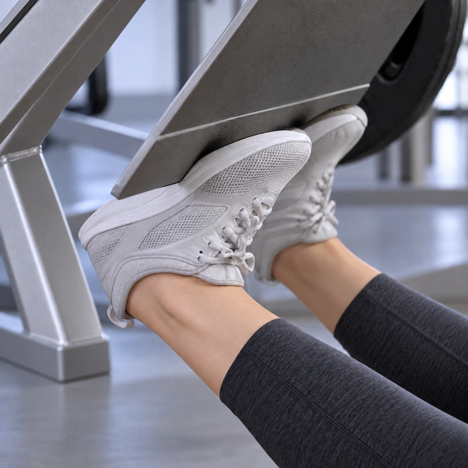
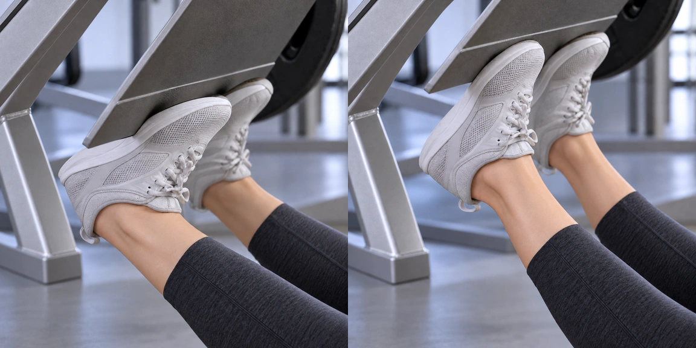

Talones en prensa · Primer plano
Dos frames: apoyo en el borde y empuje de puntillas. El plato simula un desplazamiento de unos 5 cm manteniendo el contacto con las zapatillas.
Ver ambos frames juntos

Dos frames: apoyo en el borde y empuje de puntillas. El plato simula un desplazamiento de unos 5 cm manteniendo el contacto con las zapatillas.

